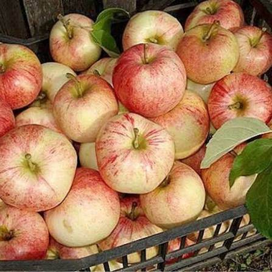
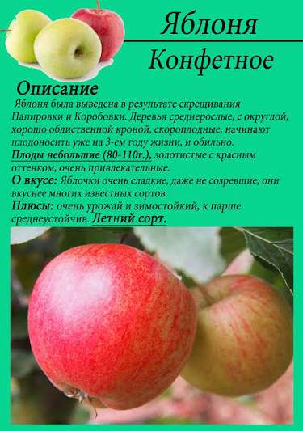
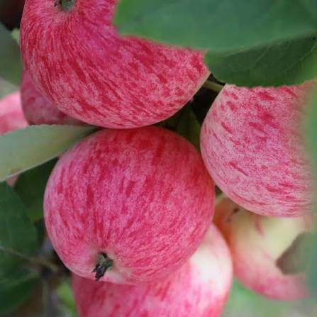
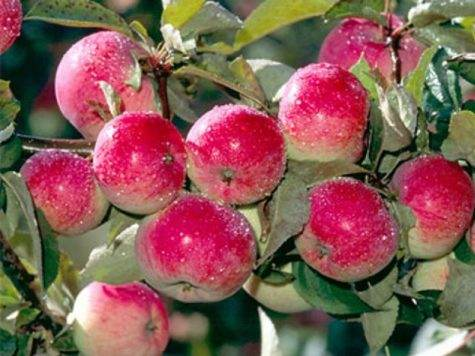

«Слаще сахара»: медово-карамельные яблоки начала августа, за которые дети готовы сами лезть на дерево.




Клик по фото — полный размер. Фотографии иллюстрируют сорт/вид; собраны из открытых источников (питомники, сортовые каталоги, Википедия).
Конфетное — летний сорт селекции С.Ф. Черненко (ВНИИС им. Мичурина). Дерево средней величины с округлой хорошо облиственной кроной, относительно зимостойкое и скороплодное (4–5 год).
Плоды некрупные и средние (80–120 г), жёлтые с оранжево-красным размытым румянцем и полосками. Мякоть мелкозернистая, нежная, наливная, сочная — медово-конфетного вкуса с тонким ароматом; кислинка почти не ощущается. Отзывы неизменно восторженные: «на вкус очень сочные и сладкие, настолько, что кажутся слаще сахара… вкус напоминает нежную карамель».
| Зимостойкость | высокая |
| Устойчивость к парше | средняя (листья поражаются во влажные годы) |
| Самоплодность | самобесплодно — нужны опылители раннего срока |
| Опылители | раннецветущие сорта: Грушовка московская, Мельба, Папировка/Белый налив, ранние клоны Антоновки |
| Лёжкость | низкая — сорт «съесть с дерева» |
| Осыпаемость | заметная при перезревании |
Советы собраны из отзывов садоводов на форумах и из практики питомников; цитаты приведены по источникам ниже.